AVK Model 2700 in Hong Kong
[Sources for this page]Sources for this page
- AVK Valves Company Hong Kong Ltd. | Fire Hydrant, Dry Barrel, 250 PSI | https://www.avkhk.com/en/product-finder/hydrants/above-ground-hydrants/27-00-001
- brykle, uploaded on Y2008-M11-D29 (photo taken on Y2008-M11-D03) | Flickr | https://www.flickr.com/photos/brykle/3068999750/
- Exploringlife | Tai Wo Hau Shopping Centre 2 | Wikimedia Commons | https://commons.wikimedia.org/wiki/File:Tai_Wo_Hau_Shopping_Centre_2.jpg
- FireHydrant.org | AVK | http://www.firehydrant.org/pictures/avk.html
- Google | Google Maps (Street View) | https://www.google.com/maps/
- HK90's Designer, on Y2021-M11-D24 | 隨著新建築落成，新款街井都開始在各區普及 | Facebook | https://www.facebook.com/hk90sDesigner/posts/4398292760275491/
- HK90's Designer, on Y2022-M07-D12 | 荔枝角星悅居 私人大型樓盤，都慢慢開始轉用此型號 | Facebook | https://www.facebook.com/hk90sDesigner/posts/5089876377783789/
- minako_sio, on Y2024-M11-D13 | 丹麥AVK集團製造街井：石塘咀 西寶城 | Instagram | https://www.instagram.com/p/DCUBPpevCVC/
- tngan, on Y2023-M12-D24 | Fire Hydrant inside HKE plant, after highrise demolition | Gwulo website | https://gwulo.com/media/47914
- tngan, on Y2023-M12-D24 | Fire Hydrant inside HKE plant, after highrise demolition, close up | Gwulo website | https://gwulo.com/media/47915
You can check out AVK's webpage about AVK Model 2700 if you want to know about the details. Firehydrant.org also has a page about AVK hydrants including the AVK Model 2700. Random fact about AVK Model 2700: each hydrant has a year stamped onto them, which I believe is the year when the hydrant was manufactured. I will note the year stamp if I checked that hydrant.
Different from the stock design, most AVK Model 2700 in Hong Kong have the Type I and II outlet nozzle caps and have a flat lid on top in place of the weather shield with the operating nut. So far, I've only seen red AVK Model 2700s. AVK Model 2700 is a foreign design, it is not as historic as the "Octagonal" hydrants, and there aren't much Hong Kong elements on them other than the outlet nozzle caps. Possibly because of these reasons, people don't seem to pay much attention to these hydrants and I could only find a handful of social media posts documenting AVK Model 2700. So, I decided to take it upon myself to document as many AVK Model 2700 as I can find. Not counting the two that were removed, I managed to confirm the existence of seventy AVK Model 2700, but I am sure there are more out there.
AVK Model 2700 at private housing estates - The Belcher's
Three are at The Belcher's outside The Westwood shopping centre, all of them are unnumbered but the one near South Lane seems to have the number "1.8M" painted on it, in white on one side and yellow on the other side.
 |
| red AVK Model 2700; year stamp 2024 |
| outside The Westwood near HKU MTR station exit C2 |
| Photo taken in Y2026-M07 |
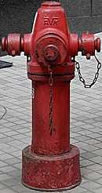 |
| red AVK Model 2700; year stamp 2000 |
| carpark ramp (?) at The Belcher's |
| Photo taken in Y2026-M07 |
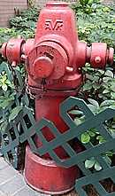 |
| red AVK Model 2700 which might be numbered 1.8M; year stamp 1996 |
| outside The Westwood near South Lane |
| Photo taken in Y2026-M07 |
AVK Model 2700 at private housing estates - Liberté
Four have been found outside Liberté. GeoInfo Map shows that the one at the carpark entrance on Lai Chi Kok Road is numbered "SFH41M", but all four hydrants have no markings painted on them.
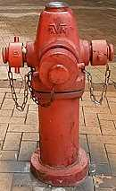 |
| red AVK Model 2700 SFH41M; year stamp 2000 |
| Lai Chi Kok Road at Liberté carpark entrance |
| Photo taken in Y2026-M07 |
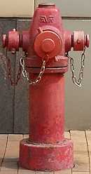 |
| red AVK Model 2700; year stamp 2000 |
| Lai Chi Kok Road near Lai Chi Kok MTR station exit D3 |
| Photo taken in Y2026-M07 |
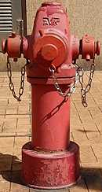 |
| red AVK Model 2700; year stamp 2000 |
| Sham Shing Road outside Liberté "A" Substation |
| Photo taken in Y2026-M03 |
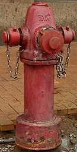 |
| red AVK Model 2700 |
| Sham Shing Road near Liberté carpark entrance |
| Photo taken in Y2026-M07 |
AVK Model 2700 at private housing estates - The Visionary
There is at least one at The Visionary in Tung Chung, numbered 1, on Ying Hong Street at the entrance of The Visionary. I don't know if the hydrants numbered 2, 3, and 4 inside The Visionary are also AVK Model 2700. I have not visited that hydrant so you have to use Google Maps street view or go there in person if you want to know how it looks like.
AVK Model 2700 at private housing estates - Oasis Kai Tak
There are two at Oasis Kai Tak, numbered 2 and 3 respectively. I have no idea where 1 is, and if 1 does exist I don't know what type of hydrant 1 is. One of number 3's side nozzles is inside a shrub when I visited it, which means it would have failed one of the chechlist items for street fire hydrant systems, specifically 4.1.11 - which stipulates at least 1.5 metres clearance for the front and sides.
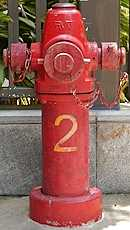 |
| red AVK Model 2700 2; year stamp 2017 |
| Ko Fei Lane North between Kai Tak Station Square and Muk Ning Street |
| Photo taken in Y2026-M07 |
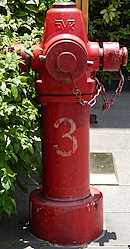 |
| red AVK Model 2700 3; year stamp 2017 |
| Ko Fei Lane North at Kai Tak Station Square |
| Photo taken in Y2026-M07 |
AVK Model 2700 at public housing estates - Po Shek Wu Estate
Po Shek Wu Estate, which was completed in 2019, has three. Number SFH 01 is outside Shan Wu House, SFH 02 is outside Tsz Jing House, and SFH 03 is outside Bik Yuk House. They all have their numbers painted on the hydrant and the ⮜ arrow painted on top, but none of them are shown in the GeoInfo Map.
 |
| red AVK Model 2700 SFH 01, year stamp 2017 |
| outside Shan Wu House in Po Shek Wu Estate |
| Photo taken in Y2026-M05 |
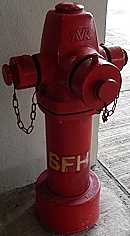 |
| red AVK Model 2700 SFH 02 |
| outside Tsz Jing House in Po Shek Wu Estate |
| Photo taken in Y2026-M05 |
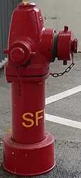 |
| red AVK Model 2700 SFH 03 |
| outside Bik Yuk House in Po Shek Wu Estate |
| Photo taken in Y2026-M05 |
AVK Model 2700 at public housing estates - Fai Ming Estate
Fai Ming Estate, which was completed in 2020, has one. You can just barely see it in Google Maps street view at the Fai Ming Road roundabout. It doesn't shown up in GeoInfo Map, so I don't know its number.
AVK Model 2700 at public housing estates - Choi Wo Court
Choi Wo Court, which was completed in 2021, has one. You can see it in Google Maps street view at the Wo Sheung Tun Street in front of the restricted road. This AVK Model 2700 has number "something H-01", you can't see what is in front of H because of the limitation of street view. It also doesn't show up in GeoInfo Map.
AVK Model 2700 at public housing estates - Queen's Hill Estate and Shan Lai Court
Queen's Hill Estate and Shan Lai Court, which were completed in 2021-2022, have eighteen in the area, numbered FH1 to FH18. While GeoInfo Map shows all of them, FH3 is incorrectly marked as FH1, resulting in two FH1 very close to each other in the GeoInfo Map. In reality, FH3's number markings on the hydrant is correct.
AVK Model 2700 at public housing estates - Wo Tin Estate
Wo Tin Estate, which was completed in 2022, has two, numbered SFH-1 and SFH-3. There are four other hydrants in Wo Tin Estate that has the SFH- prefix, but Google Map street view doesn't cover those areas so I don't know if they are AVK Model 2700. You also have to be a bit creative when looking for SFH-3 in street view. SFH-3 is on Hing Kwai Street between Wo Choi House and Wo Sin House but there is no street view of Hing Kwai Street, so you have to go to street view of the unnamed dirt road that parallels Hing Kwai Street to its west and look down onto Hing Kwai Street.
AVK Model 2700 at public housing estates - Yu Nga Court
Yu Nga Court, which was completed in 2022, has at least four, numbered SFH01, SFH05, SFH07, SFH08, and SFH09. There are four other hydrants in Yu Nga Court that has the SFH prefix, but it is not possible to look into those hydrants' locations from Yi Tung Road so I don't know if they are AVK Model 2700.
| red AVK Model 2700 SFH01 photographed from a moving bus |
| Yu Nga Court emergency vehicular access outside Nga Tak House |
| Photo taken in Y2026-M08 |
AVK Model 2700 at public housing estates - Tai Wo Hau Estate
Tai Wo Hau Estate has five, numbered ETWH 2 to ETWH 6, but the circumstances of their installation is different from the public housing estates listed above. The part of Tai Wo Hau Estate these AVK Model 2700 are installed in were completed no later than 1993, but two of the five AVK Model 2700 I checked (I was in a hurry and only checked ETWH 3 and ETWH 5) have year stamp 2020, so they must have been installed in or after 2020. According to a photo uploaded to Wikimedia Commons by netizen Exploringlife, the location of ETWH 5 was still a Round Head in 2017. It seems these AVK Model 2700 replaced the Round Heads in or after 2020. There were no buildings completed in Tai Wo Hau Estate in 2020, but there was a public housing estate completed in 2020 next to Tai Wo Hau Estate: Sheung Man Court. I am yet to find any evidence that is able to prove the connection between the completion of Sheung Man Court and the change of hydrant type in Tai Wo Hau Estate, but the timing seems to match. And in case anyone is wondering, ETWH 1 is a Round Head. You can see some blue paint on the front nozzle cap of ETWH 4 and ETWH 5, which means they were not in service immediately after installation, but it seems whoever did the blue paint removal did a bad job. I think this makes ETWH 4 and ETWH 5 the only extant AVK Model 2700 that have (or used to have) caps painted blue (that I know of).
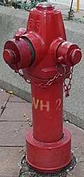 |
| red AVK Model 2700 ETWH 2 |
| outside Fu Tai House in Tai Wo Hau Estate |
| Photo taken in Y2026-M06 |
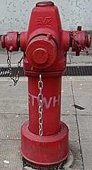 |
| red AVK Model 2700 ETWH 3; year stamp 2020 |
| outside Fu Yin House in Tai Wo Hau Estate |
| Photo taken in Y2026-M06 |
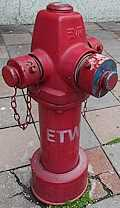 |
| red AVK Model 2700 ETWH 4 |
| outside Fu Tak House in Tai Wo Hau Estate |
| Photo taken in Y2026-M06 |
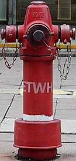 |
| red AVK Model 2700 ETWH 5; year stamp 2020 |
| outside Tai Wo Hau Shopping Centre in Tai Wo Hau Estate |
| Photo taken in Y2026-M06 |
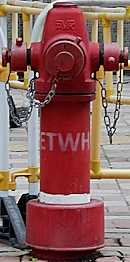 |
| red AVK Model 2700 ETWH 6 |
| outside Fu Kwok House in Tai Wo Hau Estate |
| Photo taken in Y2026-M06 |
AVK Model 2700 at other places - Tsing Long Highway
There are twelve on the section of Tsing Long Highway between Au Tau Interchange and Tai Lam Tunnel bus interchange. I have no idea why AVK Model 2700 was chosen to be installed on this section of the highway as Round Heads can be seen along other sections. The twelve AVK Model 2700 are numbered: 5.1A, 5.1B, 5.2A, 13A, 6.1A (or maybe 61A, not sure), 6B, 6C, 7A, 7B, 7C, 8J, 8K. Some of these AVK Model 2700 are rotated and do not face the highway directly, including 5.1B, 5.2A, 6.1A, 7C, 13A. All photos were taken from a moving bus so the quality is not great.
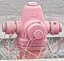 |
| red AVK Model 2700 5.1A |
| Tsing Long Highway on/off ramp at Kam Tin Road |
| Photo taken in Y2026-M03 |
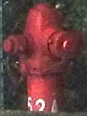 |
| red AVK Model 2700 5.2A |
| edge of Tsing Long Highway south-bound lanes after the flyover from Kam Tin Rd merges into the highway |
| Photo taken in Y2026-M07 |
| the best photo I have of red AVK Model 2700 7C |
| edge of Tsing Long Highway south-bound lanes before the New Territories Circular Road flyover merges into the highway |
| Photo taken in Y2026-M07 |
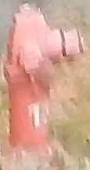 |
| red AVK Model 2700 13A |
| edge of Tsing Long Highway south-bound lanes after the New Territories Circular Road flyover merges into the highway |
| Photo taken in Y2026-M07 |
AVK Model 2700 at other places - Chek Lap Kok airport
There are AVK Model 2700 in the Chek Lap Kok airport. Three can be seen on the Cheong Hong Road viaduct, there used to be a fourth one but it was removed for some reason. I have no photos of the Cheong Hong Road ones unfortunately, maybe someday. I also saw several AVK Model 2700 on the mess of viaducts east of Terminal 2 (the renovation of which had recently finished). I recall seeing more AVK Model 2700 on viaducts near the terminals when I was on the bus but I only managed to photograph three from SKYCITY and 11 SKIES (I said photograph but the resolution of two of them is terrible because I was at least 200 metres from the hydrants lol). We can also see the valves and piping for these AVK Model 2700, something we will not see if they are intalled on street level. I think it is a bit weird that they chose AVK Model 2700 rather than other "viaduct hydrant" types (see this page for info on "viaduct hydrants"). I can't really find an officially stated reason for their decision of installing this many full-size hydrants this close to each other on a road bridge that doesn't carry that many lanes.
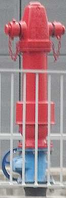 |
| red AVK Model 2700 |
| Sky Plaza Road viaduct |
| Photo taken in Y2026-M06 |
AVK Model 2700 at other places - ELEMENTS south arpark / Kowloon Station carpark access road
There are at least six AVK Model 2700 in the ELEMENTS south arpark or Kowloon Station carpark access road / Station Perimeter Raod South, but I don't think pedestrians can walk up to these hydrants. GeoInfo Map does seem to show these hydrants and some of them have hydrant numbers, but it is hard to tell if GeoInfo Map is showing the hydrants on the upper level (the hotel drop-off pick-up area) or these AVK Model 2700. I believe the only way you can photograph these hydrants is if you take a bus or minibus, or drive.
 |
| red AVK Model 2700 |
| Station Perimeter Raod South (?), ELEMENTS south carpark / Kowloon Station carpark access road |
| Photo taken in Y2026-M08 |
AVK Model 2700 at other places - Cheung Ching Tunnel East Substation
I actually found this AVK Model 2700 in Google Maps street view by accident when I was looking for "viaduct hydrants" at the nearby road bridges. There are so many interesting things to talk about this AVK Model 2700.
Firstly, the operating nuts on the outlet nozzle caps. I believe this type of cap used to be common in Hong Kong, but they were phased out and replaced by caps with handles instead. Caps with both nuts and handles are not that hard to find in Macao, but I have never heard of caps like this existing in Hong Kong.
The next obvious thing is the operating nut on the top lid, known as a weather shield in the official parts list. Most other AVK Model 2700 in Hong Kong have a flat weather shield, but this one is the stock weather shield with the operating nut.
Thirdly, it is tilted. Like, really? Why did no one make it upright?
Fourthly, its surface box lid, which is also not the standard lid you can see for other hydrants. In fact, it resembles some random lids you can see on footbridges.
And finally, its location. It is a comfortable 170 metres uphill walk from the nearest bus stop of Tsing Yi Industrial Centre, via a pedestrian footpath that is just two metres wide, with a rather steep downhill slope to your left and a busy road to your right (with fences on both sides, so don't worry you will not fall off the slope or get hit by a car, hopefully). I don't think anyone will walk here unless they work at the Cheung Ching Tunnel east portal building. There isn't really much going on there so I think this hydrant's only purpose is to provide water to firefighters in case the Cheung Ching Tunnel east portal building (or its substation) is on fire.
 |
| front view of an unnumbered red AVK Model 2700 |
| Tsing Yi Heung Sze Wui Rd @ Cheung Ching Tunnel East Substation |
| Photo taken in Y2026-M06 |
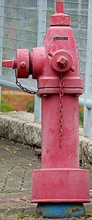 |
| side view of an unnumbered red AVK Model 2700 |
| Tsing Yi Heung Sze Wui Rd @ Cheung Ching Tunnel East Substation |
| Photo taken in Y2026-M06 |
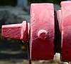 |
| front cap of an unnumbered red AVK Model 2700 |
| Tsing Yi Heung Sze Wui Rd @ Cheung Ching Tunnel East Substation |
| Photo taken in Y2026-M09 |
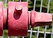 |
| side cap of an unnumbered red AVK Model 2700 |
| Tsing Yi Heung Sze Wui Rd @ Cheung Ching Tunnel East Substation |
| Photo taken in Y2026-M09 |
 |
| unique surface box lid of an unnumbered red AVK Model 2700 |
| Tsing Yi Heung Sze Wui Rd @ Cheung Ching Tunnel East Substation |
| Photo taken in Y2026-M09 |
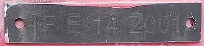 |
| I think this is the hydrant's serial number plaque: "1F E 14 Z001" |
| Tsing Yi Heung Sze Wui Rd @ Cheung Ching Tunnel East Substation |
| Photo taken in Y2026-M06 |
It was already like this in 2009 in the earliest Google Map street view of the area, but its year stamp is 1996 - one year before the Cheung Ching Tunnel's opening in 1997.
The removed AVK Model 2700 at the former Hongkong Electric Company headquarters
Historically, there was a red AVK Model 2700 located in the Hongkong Electric Company headquarters in Ap Lei Chau. Netizen tngan's photo of the site taken on Y2023-M12-D24 showed that the AVK Model 2700 had a stock weather shield with the operating nut, unlike most other AVK Model 2700 in Hong Kong with the flat top lid. tngan's photo also captured a sign on the hydrant, which said "do not interfere / destroy" or something in Chinese, presummably warning construction site workers not to damage the hydrant. I visited the site in person on Y2026-M04-D30 and I believe this AVK Model 2700 had already been removed. All I could see were construction material, workers, and machinery cluttering the area.
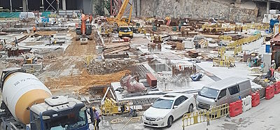 |
| The AVK Model 2700 would be somewhere in this photo if it still existed at the Hongkong Electric Company headquarters |
| Site of the former Hongkong Electric Company headquarters |
| Photo taken in Y2026-M04 |